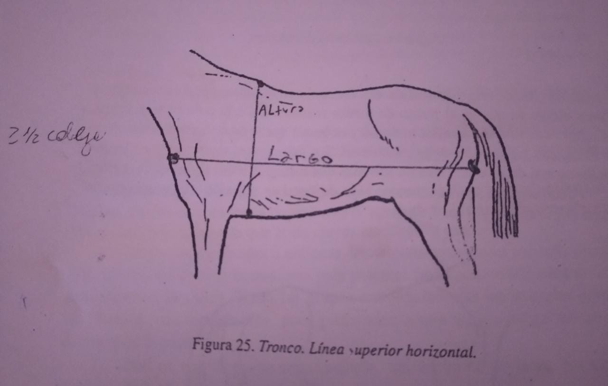
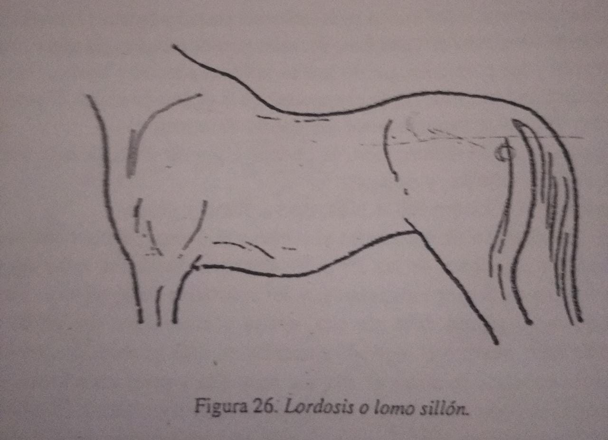
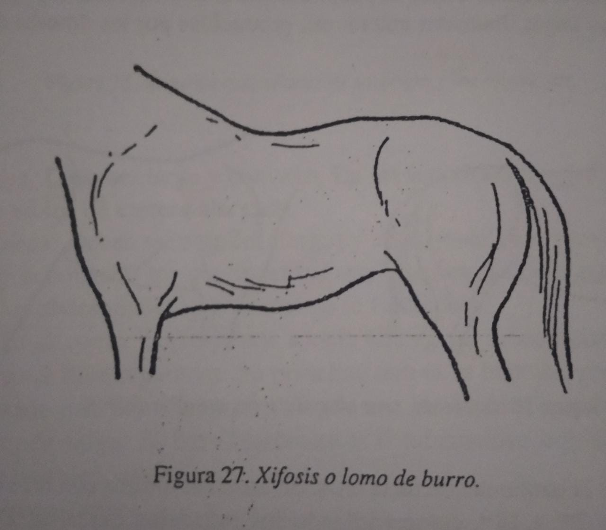

Morfologia
Cabeza
La cabeza es el eje de gravedad del caballo, en otras palabras va a dirigir la dirrecion en la que va a caminar el caballo, la dirrecion mas normal es oblicua (si el angulo que forma el cuello es de 90° ), los estrelleros (angulo mayor a 90°) no son deseables porque presentan una incorrecta vista cercana, los caballos armados (angulo menor a 90°) tienen mala vision lejana pero buena cercana.
El plano anterior a la cabeza se llama perfil fronto-nasal y puede tener diferentes formas:
- Recto: de la punta de la nariz a la nuca es recto, es deseable en casi todas las razas mejoradas.
- Convexo: comunmente se ve en razas pesadas.
- Concavos: es dificil de allar.
- De Carnero: frente recta, pero con cara y nariz concava.
- De Liebre: de frente convexa y cara recta.
- De Rinoceronte: cara concava y frente recta.
- Romo: frente subconcavo y cara recta.
Cuello
el cuello al igual que la cabeza actua de balancin, modificando el centro de gravedad del caballo y su postura. el cuello empieza desde el tupe (primer pelo de la crin) hasta la cruz. En su borde inferior, por su lado derecho corre la traquea y en el lado izquierdo el esofago.
segun su perfil puede ser:
- Recto: ambos bordes son rectos
- Arqueado: el borde superior es convexo , su borde inferior es recto ligeramente concavo
- Cisne: dos tercios de borde superior son convexo y el otro tercio recto, borde inferior concavo
- Ciervo: el borde superior es concavo y inferior recto o levemente concavo
- Gallo: el primer tercio del borde superior esw convexo y los otros dos son rectos, el borde inferior es concavo


Tronco
El largo del tronco se mide desde la punta del encuentro hasta la punta de la nalga y es igual a dos veces y medio al largo de la cabeza. El ancho se toma desde detras de las espaldas en la union del tercio medio y superior y es igual a una o 5/6 partes del largo de la cabeza.
La altura o profundidad se calcula desde la cruz hasta la cinchera. La linea superior del tronco debe ser mas o menos horizontal fuerte y recta, si la linea superior es concava, el animal sufre de lordosis o lomo de silla, el cual es tipico en animales con buen ritmo y andar pero que pierden velocidad
Si el defecto de la linea superior es convexa entonces sufre de xifosis o lomo de burro, en estos casos el animal presenta una disminucion en la elasticidad del andar, siendo mas duro y con tendecia a tropezar, pero con mas velocidad que la lordosis.
Se puede dividir al Tronco en 5 planos: Dorsal, Laterales, Ventral, Anterior, Posterior.
Plano Dorsal: conmprende la cruz, dorso, lomo y grupa.
- Cruz: Es la region ubicada entre el cuello y el dorso. En los animales de andar rapido debe ser alta, ancha y musculosa, en los de tiro aparece mas baja y con espesor muscular mas grande.
- Dorso: es la continuacion de la cruz, debe ser corto en los caballos de tiro y mas largo en los de silla.
- Lomo: su caracter de belleza es que sea corto y musculoso, ya que es el punto de menor resistencia de la columna vertebral, cumple una funcion similar al dorso por lo cual debe se ancho, musculoso y recto para tener mayor resistencia
- Grupa: se continua sin limite de demarcacion con el lomo y debe tener masas musculares bien desarrolladas. Se llama grupa horizontal cuando el angulo es de 15° a 25°, inclinada o oblicua cuando es de 25° a 35°, caida o llovida cuando es mayor a 35°. Cuanto mas horizontal es la grupa, mas propension a la velocidad tiene el equino, en grupas oblicuas los musculos son mas cortos pero mas potentes, las llovidas son indeseables dado que propenden a mayor fatiga muscular, lo ideal son grupas cuadradas tan anchas como largas.
Plano anterior:
- Pecho: se encuentra por debajo del cuello, entre las dos espaldas e interaxilas. Debe ser alto y ancho para darle amplitud a la caja toracica. Carece de taras importantes
Plano Ventral: comprende axilas, interaxilas, cincheras, vientre y region inguinal. Las primeras 3 carecen de indicaciones importantes.
- Vientre: un vientre bello debe ser redondo, de volumen medio, con su linea inferior levemente convexa y en ascenso regular hacia la region inguinal.
Tipos de vientre: - Vientre de galgo: es cuando la linea inferior del vientre se eleva excesivamente.
- Vientre quemado: es lo extremo al anterior, se ve en caballos enfermos o debiles.
- Vientre de vaca: son vientre voluminosos debido a la alimentacion grosera o exceso de partos
- Region inguinal: se encuentra entre los dos muslos, estando algo escondido por el pliegue de la barbilla o ingle, presenta los organos genitales externos en el macho y las glandulas mamarias en las hembras
Plano posterior: comprende la cola, ano, perine, rafe perineal, y organos genitales externos en hembras
- Cola: su funcion es proteger los genitales y espantar insectos, hay que observar su fuerza, movilidad, dirrecion, largo e insercion.
- Ano: esta debajo de la cola y su base anatomica es el musculo esfinter anal. Debe tener buen tono muscular en equinos jovenes con buena salud, pudiendo estar relajado en animales viejos.
- Vulva: Tiene un vertice debajo del ano, de forma angulada, y el extremo inferior es redondeado. Debe tener buen tono y ser perpendicular al suelo con un 80% por debajo del suelo de la pelvis.
Extremidades
Compuesto por miembros los cuales actuan como palancas de sosten y transporte. A los miembros anteriores o toracicos se los denomina Manos estan mas cerca del centro de gravedad del individuo por lo que sus principales funciones son las de sosten y amortiguacion.
Los miembros posteriores se denominan Patas y su principal funcion es la de propulsion, impulsando el animal hacia adelante al transformarse las fuerzas de reaccion de verticales a horizontales.
miembro anterior y sus angulos articulares
- Manos: sus regiones son: espalda, encuentro, brazo, codo, antebrazo, rodilla, caña, nudo, cuartilla, corona y casco.
- Espalda: la longitud esta relacionado con el angulo, se busca un mayor largo por lo cual una mayor oblicuidad en animales velocez, dando un paso mas largo y mayor velocidad, y en animales de fuerza mas corto o vertical dado que aporta mayor fuerza de tiro.
- Encuentro: su buena visualizacion depende del biotipo del equino, en animales rapidos debe ser destacado y en animales de tiro oculto por la masa musculares.
- Brazo: en general es mas largo en caballos de tiro que en los livianos. Carece de taras importantes.
- Codo: Al igual que el brazo, su dirrecion debe ser paralela al plano medio del tronco, ya que si apunta hacia medial, el miembro se desviara hacia lateral y viceversa. Toda desviacion repercute en el aplomo general.
- Antebrazo: la longitud del antebrazo debe ser aproximadamente 3/4 de cabeza, con una dirrecion vertical y bien musculado en dorsal y palmar, siendo seco y neto en medial y distal.
- Rodilla: actua en forma de bisagra, permitiendo la flexion y extension del miembro. La rodilla debe ser ancha, seca y neta, lo que permite una buena visualizacion y un mejor reparto de las fuerzas que se transmiten a traves de la caña.
- Caña: el largo debe ser proporcionado y un poco menor el de la mano que el de la pata. El ancho y el espesor deben ser uniformes, y su dirrecion vertical. Deben ser secas y netas, pudiendose observar los tendones y el ligamento suspensorio o entrecuerda en razas livianas, no observandose en razas pesadas por el tejido subdermico y los pelos largos.
- Nudo: su funcion es la amortiguacion en el momento de apoyo. Su contorno debe ser regular, con una forma casi esferica. Debe ser seco y neto y su angulo dorsal de unos 135° a 140° aproximadamente.
- Cuartilla: los bordes anterior y posterior deben ser rectos y paralelos y los bordes medial y lateral ligeramente concavos. En las cuartillas debe observarse el largo, ancho, espesor y dirrecion; deben ser secas y netas.
- Corona: es ligeramente convexa, y debe ser seca y neta. La tara mas comun es la forma falangiana distal, la osificacion del cartilago alar de la tercera falange y el gabarro cartilaginoso.
- Casco: es sobre la que descansa el peso del equino. Su importancia radica en que cualquier anormalidad afecta el normal desplazamiento del caballo.
- Muslo: como caracteristicade belleza debe ser musculado, siendo su principal defecto la debilidad muscular. Su direccion depende de la direccion de la grupa.
- Nalga: forma el perfil posterior del muslo; debe tener un buen desarrollado muscular y ser larga.
- Barbilla: debe ser seca y neta. Su defecto mas importante radica en la direccion, y su enfermedad mas comun es el enganche rotuliano intermitente o permanente.
- Pierna: es musculada en su cara lateral. Su cara interna es plana y presenta la piel adosada al hueso. Sus defectos mas comunes son las desviaciones de dirrecion y la pobreza muscular. Su dirrecion esta relacionada con la grupa. Con una grupa horizontal habra una pierna vertical al suelo y con las grupas oblicuas, el angulo femorotibial sera mas cerrado, y la pierna mas oblicua.
- Garron: su funcion es desdoblar fuerzas provenientes del apoyo e impulsion. Se describen anatomicamente 4 planos: anterior, posterior, laterales y medial, debido a su forma piramidal. Sus principales defectos son: el garron estrangulado, es decir, ancho en proximal y angosto en distal, que esta asociado a debilidad osea, y los defectos de aplomo.